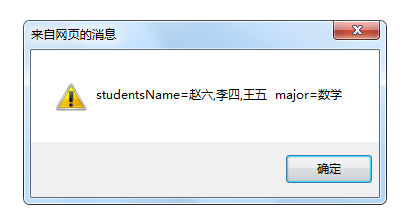
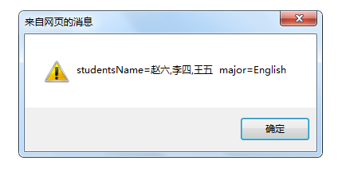
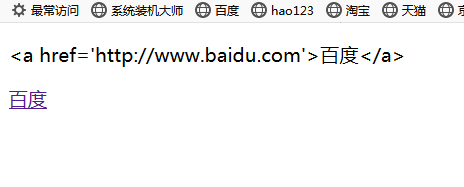

1.函数原型prototype设置的对象是只读类型，所以不能修改（即栈只读）。但是我们常常可以看到它被“修改‘’了。若对象中定义的属性和原型中属性一样，优先使用自定义属性。
例如代码:
//原型 类似于父类
function students() {
this.major= '数学';
this.studentsName = ['张三','李四','王五'];
}
var myStudents = new students(); //必须建立实例对象 才能被其他对象'继承';
//建立对象
function teacher(sub) {
}
teacher.prototype = myStudents;//设置原型
var mathTeacher = new teacher(); //创建对象
mathTeacher.studentsName[0] = '赵六';
var englishTeacher = new teacher(); //创建对象
englishTeacher.major = 'English';
alert('studentsName=' + mathTeacher.studentsName + " " + 'major=' + mathTeacher.major);//输出结果
alert('studentsName=' + englishTeacher.studentsName + " " + 'major=' + englishTeacher.major);//输出结果输出结果为：

但是它们修改的方式是不一样的。
mathTeacher.studentsName[0] = '赵六';studentsName指向的数组不能变，但是数组成员可以变。例如studentsName指向三年二班，你就不能让它重新指向四年一班。但是三年二班的学生改变了，studentsName还是指向三年二班没有改变。（这涉及栈堆问题）
englishTeacher.major = 'English';这并没有改变原型中的major，只是对象新建了一个和原型中的major同名的属性，根据原则优先使用自定义属性。
2.innertext和innerHTML属性的区别：
给innertext任何值都将视为文本，并以文本的形式完整的输出。
而innerHTML能判断给的值是否是标签，若是转为标签。例如
<script type="text/javascript">
//页面加载完成后执行
window.onload = function () {
window.p1.innerText = "<a href='" + 'http://www.baidu.com' + "'>"+'百度'+'</a>';
window.p2.innerHTML = "<a href='" + 'http://www.baidu.com' + "'>" + '百度' + '</a>';
}
</script>
</head>
<body>
<!--第一个p标签 用于测试innerText-->
<p id="p1">
</p>
<!--第一个p标签 用于测试innerHTML-->
<p id="p2">
</p>
</body>运行结果为

3.一个需要图片跟着鼠标移动的需求，使用document.body.onmousemove发现不太理想，于是使用了document.onmousemove达到了效果。于是稍微琢磨了一下两者的区别。
在给document.body使用background-color染色时发现是整个屏幕染色。但是实际上document.body只有图片大小（本例中），只有鼠标在图片中移动时图片才会跟着移动。所以应该是body中有多少元素就撑多大。教程中说的body 的width 是不受限制，实际测试中也是受限制的（时代在变化？）。
而document.onmousemove是针对整个屏幕的事件。所以根据需求做不同的选择吧。
4.在设置元素大小时发现不是直接在元素中设定的style属性，无法直接使用xxx.style.heigth获得 ，得使用xxx.offsetHeigth获得。宽也一样。